Создание тестов в PowerPoint
Задача
Требуется создать простой но привлекательно выглядящий тест.
Суть теста: Тестируемому предлагается ряд вопросов, ответы на которые служат критериями предложения некоторого выбора.
Решение
В качестве решения выбрано приложение PowerPoint и язык программирования Visual Basic for Application, встроенный в данное приложение.
Презентация
Создание презентации
Средствами PowerPoint следует создать новую презентацию. При этом следует обратить внимание, что расширение файла должно быть .pptm или .ppt – в противном случае вы не сможете использовать программный код в презентации.
Настройка презентации
Презентация в целом составляется аналогично обычным презентациям (не интерактивным).
Создается титульный слайд с кнопкой начала тестирования:
Создается заключительный слайд для вывода результатов:
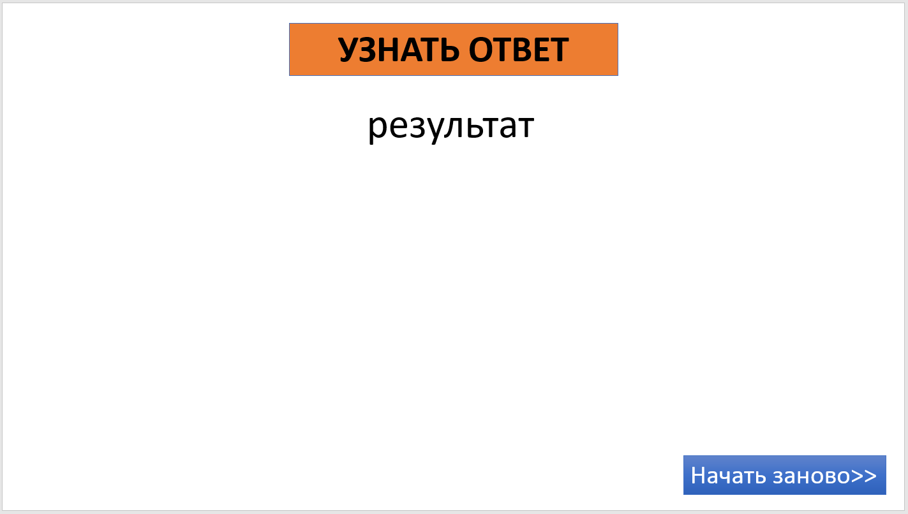
Наконец, создаются слайды для каждого из вопросов:
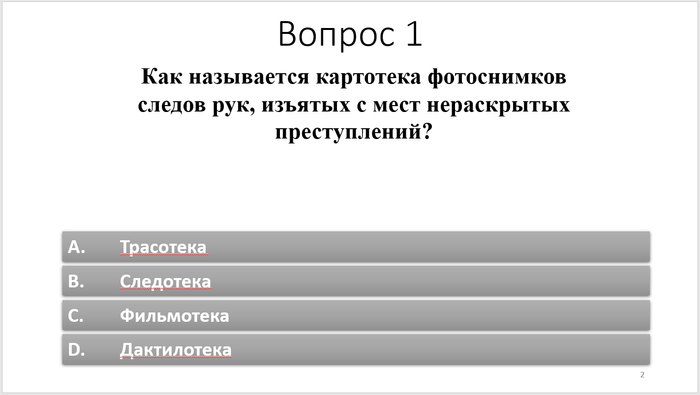
Варианты ответов должны быть созданы отдельными фигурами – использование списков или элементов SmartArt невозможно!
Для обращения к некоторым элементам слайдов удобнее задать их имена. Для этого следует воспользоваться командой Область выделения вкладки Редактирование ленты Главная.
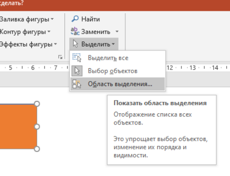
И в дочернем окне Выделение следует указать требуемое имя элемента в котором будет выводиться итог – в данном случае результат
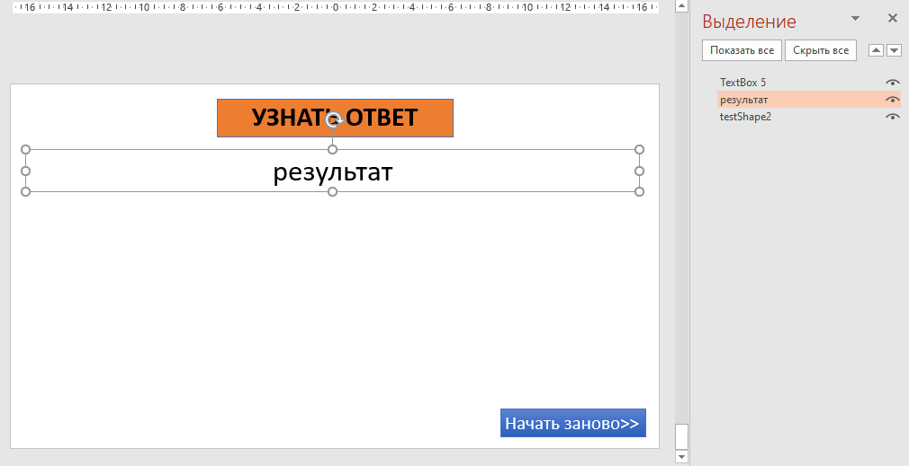
Программный код
Включение инструментов разработчика
По умолчанию инструменты разработчика не активны. Для того, чтобы из активировать следует перейти в меню Файл/Параметры, в появившемся окне выбрать вкладку “Настроить ленту”, далее в правой части окна поставить флажок напротив ленты “Разработчик” в списке лент.
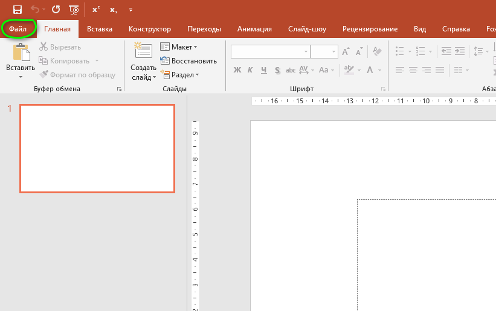
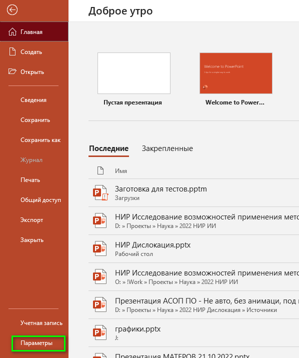
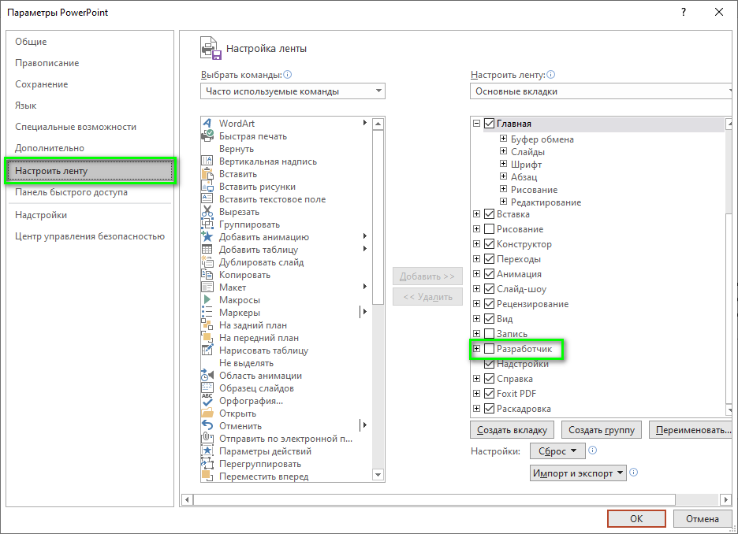
Редактор VBA
Основная программная часть будет писаться при помощи редактора VBA. Для того чтобы открыть его следует перейти на вкладку “Разработчик” и воспользоваться кнопкой “Visual Basic”.
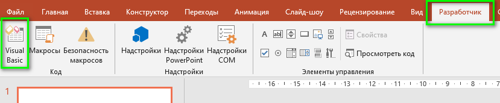
Макросы VBA
В появившемся окне редактора следует в дочернем окне Project совершить правый щелчок мыши напротив наименования проекта (по умолчанию VBAProject[название презентации]) и выбрать из выпадающего списка команду Insert/Module.

Основные переменные
Требуется создать несколько переменных для хранения итогов тестирования. Следующий код необходимо добавить в начале текста программного модуля созданного ранее:
Option Explicit
Public cnt_1, cnt_2, cnt_3 As IntegerВ данном случае предполагается, что всего возможно три исхода тестирования:
- Специалист техносферной безопасности
- Инженер пожарной безопасности
- Судебный эксперт
Поэтому объявляется три переменных cnt_1, cnt_2, cnt_3, каждая из которых соответствует одному из вариантов
Код начала тестирования
В начале тестирования должен запускаться программный код который обнулит имеющиеся значения переменных для хранения итогов тестирования.
Public Sub test_start()
cnt_1 = 0
cnt_2 = 0
cnt_3 = 0
clearResultSlide
ActivePresentation.SlideShowWindow.View.Next
End SubСтрока ActivePresentation.SlideShowWindow.View.Next выполняет переход к следующему слайду в режиме показа презентации.
Функция clearResultSlide очищает текст в поле вывода итогов тестирования на последнем слайде:
Private Sub clearResultSlide()
' Очищаем текст поля с выводом итоговой информации. Имя фигуры должно быть "результат"
Dim lastSlide As Slide
Set lastSlide = ActivePresentation.Slides.Item(ActivePresentation.Slides.Count)
lastSlide.Shapes("результат").TextFrame.TextRange.Text = " "
End SubКод реагирования на выбор ответов
Public Sub is_A()
CheckAnswer "A", ActivePresentation.SlideShowWindow.View.Slide.SlideNumber
ActivePresentation.SlideShowWindow.View.Next
End SubВыше приведен пример процедуры которая должна срабатывать при выборе конкретного ответа (в данном случае – ответ под буквой А). Аналогичные процедуры создаются для всех прочих возможных вариантов ответов.
Код интерпретации ответов
Каждый из ответов может добавить вес одному или нескольким из возможных вариантов. Для определения правил изменения веса служит следующая процедура:
Private Sub CheckAnswer(ByVal ответ As String, ByVal номерСлайда As Integer)
Dim вопрос As Integer
вопрос = номерСлайда - 1
Select Case вопрос
Case Is = 1
If InStr(1, "*", ответ) > 0 Then cnt_1 = cnt_1 + 1
If InStr(1, "*", ответ) > 0 Then cnt_2 = cnt_2 + 1
If InStr(1, "B", ответ) > 0 Then cnt_3 = cnt_3 + 1
Case Is = 2
If InStr(1, "*", ответ) > 0 Then cnt_1 = cnt_1 + 1
If InStr(1, "A", ответ) > 0 Then cnt_2 = cnt_2 + 1
If InStr(1, "*", ответ) > 0 Then cnt_3 = cnt_3 + 1
'Case Is = 3 ' Далее указываются правила для каждого из ответов
'
End Select
End SubВ данном конкретном случае, номер вопроса (вопрос) = номер слайда (номерСлайда) - 1, т.к. Имеется титульный слайд не являющийся вопросом.
В строке If InStr(1, "B,C", ответ) > 0 Then cnt_1 = cnt_1 + 1 осуществляется проверка правила. В данном случае если ответ будет равен B или C, то для данного вопроса вес первого параметра cnt_1 будет увеличен на единицу. Если ответ будет равен A, то вес первого параметра изменен не будет.
Таким образом, для каждого из возможных вариантов ответа должна быть задана отдельная строка правила. И тогда для каждого вопроса должен быть написан следующий код (для трех итоговых вариантов):
If InStr(1, "A,B", ответ) > 0 Then cnt_1 = cnt_1 + 1
If InStr(1, "D", ответ) > 0 Then cnt_2 = cnt_2 + 1
If InStr(1, "C", ответ) > 0 Then cnt_3 = cnt_3 + 1В описанном выше коде веса первого параметра будут увеличены только в случае ответов A или B, второго – D, третьего – C. В случае, если для какого либо варианта ни один из ответов не увеличивает вес, в качестве возможных вариантов ответа можно указать любой символ не соответствующий букве ответа, например, "*".
Код подведения итогов
Public Sub TotalCounts()
' Итоговая функция
' Ответ №1:
If cnt_1 >= cnt_2 And cnt_1 >= cnt_3 Then
ActivePresentation.SlideShowWindow.View.Slide.Shapes("результат").TextFrame.TextRange.Text = "Судя по результатам, " & _
"Вам подходит деятельность Специалиста техносферной безопасности"
Exit Sub
End If
' Ответ №2:
If cnt_2 >= cnt_1 And cnt_2 >= cnt_3 Then
ActivePresentation.SlideShowWindow.View.Slide.Shapes("результат").TextFrame.TextRange.Text = "Судя по результатам, " & _
"Вам подходит деятельность Инженера пожарной безопасности"
Exit Sub
End If
' Ответ №3:
If cnt_3 >= cnt_2 And cnt_3 >= cnt_1 Then
ActivePresentation.SlideShowWindow.View.Slide.Shapes("результат").TextFrame.TextRange.Text = "Судя по результатам, " & _
"Вам подходит деятельность Судебного эксперта"
Exit Sub
End If
End SubВ приведенном коде осуществляется проверка, того, какой из параметров по итогу тестирования имеет наибольший вес. В зависимости от этого в элементе с именем результат отображается соответствующий текст.
В данном случае осуществляется простое сравнение весов вариантов, но логика может быть и более сложной.
Окончательная настройка
Связывание элементов с кодом
Для связывания элементов с кодом применяется команда Действие группы Ссылки ленты Вставка.
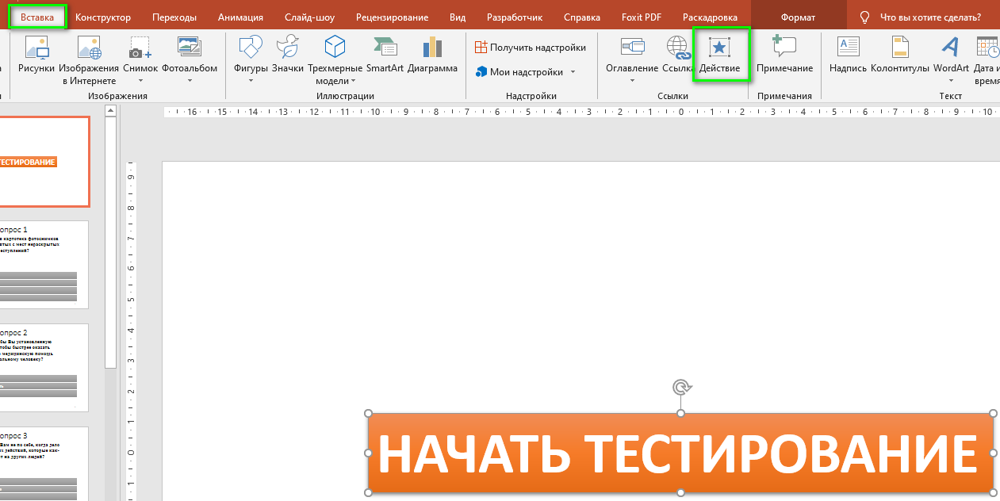
При запуске команды Действие фигура к которой должно быть применено данное действие должна быть выбрана. При этом выбрана должна быть именно рамка фигуры а не текст в ней, иначе выбранное действие будет применено не ко всей фигуре, а только к выбранному тексту, что неудобно.
В появившемся окне следует выбрать процедуру которая будет выполняться при щелчке мыши на элементе.
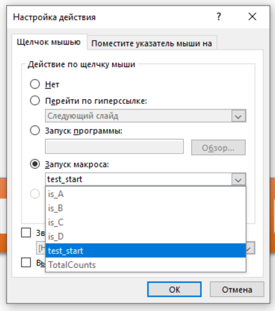
Таким образом:
- для фигуры начала тестирования указывается процедура
test_start - для фигур ответов указываются процедуры
is_A,is_B,is_C,is_D - для фигуры демонстрации результата тестирования (на последнем слайде) указывается процедура
TotalCounts
Наименования процедур могут быть иными в зависимости от их наименования в программном коде.
Настройка фигуры демонстрации результата тестирования выглядит так:
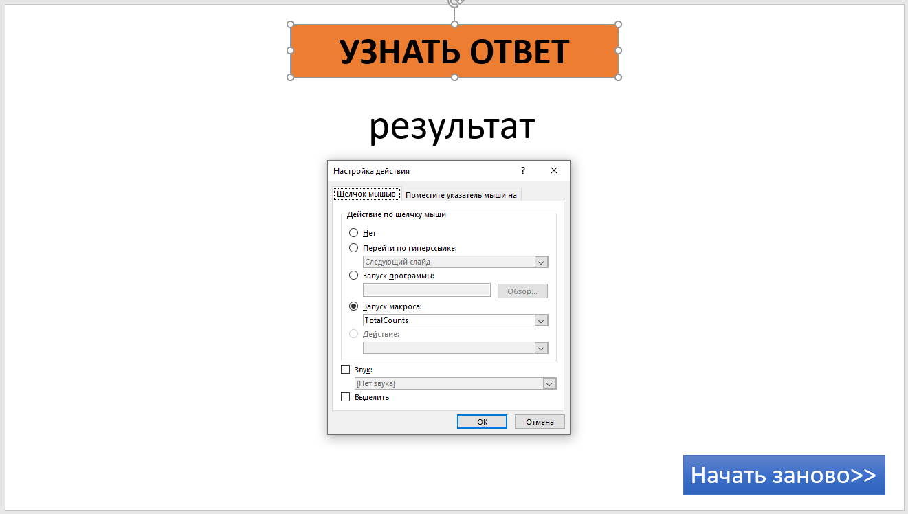
Возврат к стартовому слайду
Функцию возврата к стартовому слайду можно реализовать стандартными средствами PowerPoint, без использования программного кода VBA. Для этого следует выбрать фигуру, которая будет служить переходом к стартовому слайду и воспользоваться командой действие. Но в данном случае в окне настройки действия следует выбрать опцию Перейти по гиперссылке и указать Первый слайд.
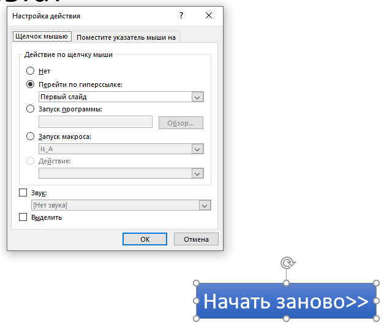
Запрет перехода
Наконец, стандартно слайды презентации листаются по клику на слайде. В данном случае такое поведение является нежелательным, т.к. тестируемый пользователь получит возможность перемещаться между слайдами не отвечая на вопросы.
Для предотвращения этого следует снять флаг По щелчку предварительно выбрав в области навигации по презентации все слайды:
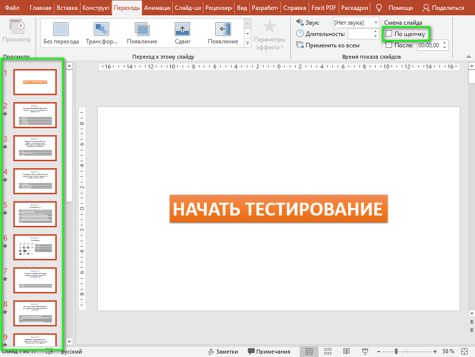